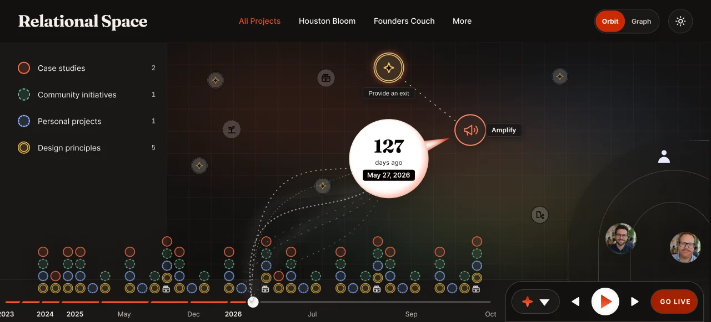

OutcomeHorizon 2 · Protect community intelligence
Relational Spaces
Relational spaces are a concept I’m developing with the Community Legibility Spec. A relational space is a way to see your friends’ and collaborators’ real-time activity without a platform in between.
Overview
- Status
- Exploring

The template
- The file holds no data
- The HTML file is standalone. It populates every time you open it, from whatever local data you give it access to. Point it at all of your documents or at one file, and it renders from that. Close it, and nothing is stored inside it.
- Templates
- The interactive views are called templates. They let people access their data however they like, without giving it up. A template holds none of my personal data. People download it from me, point it at their own data, then modify and adapt it to their own uses.
- No SaaS-style ownership
- We can all improve our templates quickly and share them back.
- What the spec tracks
- The Community Legibility Spec defines what you keep track of, like your projects and principles. Its systems and AI workflows support these offline, shareable views. My AI activity log, for example, feeds the activity log template shown here.
Sharing
- Visibility
- The visibility system decides what leaves the vault. On my computer, this view shows all of my private files.
- Orbit
- The Orbit view arranges people by trust boundary: my most trusted collaborators at the center, friends in the middle, less trusted acquaintances on the outside. The bottom right shows the people who have access to my work or are viewing it, with their access levels.
- Cuts
- Sharing is a separate process. I make a cut: a new version that holds only the data matching the trust or access level of the person I’m sending it to. I’m the one saying this information is for this person. That is how nothing leaves the vault that isn’t supposed to.
The dual ledger
- Your own logs
- Sharing also goes into dual-ledger authentication. You keep your own activity logs. The system keeps them automatically on your own computer and uses them to populate these templates.
- The minimum
- At a minimum, the community broadcasts the timestamps of activity between people, along with their design principles, vision or mission. Anything more goes into the community data commons, which that community maintains.
- Radio call signs
- When two radio operators make contact, each one logs the other’s call sign and the time. The matching entries prove the contact happened. The Community Legibility Spec sets that minimum to keep the community’s data safe.
- The community is the boundary
- The values of the individuals who make up a community are what it represents. Their actions prove the community is what it says it is. In the room, the projector shows a similar view with everyone present and their own local context.
Settled
- The surface comes to your data
- Not the other way round
- Design principles are the comparison
- The four principles are the axes work is compared on
Still open
- Live sessions
- Specified, not built
Also
- Example: Meeting Lenses
- A desktop facilitation tool that turns meeting chat into live, shared views. Nine switchable lenses: role maps, word clouds, question boards, polling spectrums. Participants install nothing, and the data ends when the session does. The spec and build plan are written; it is not built yet.